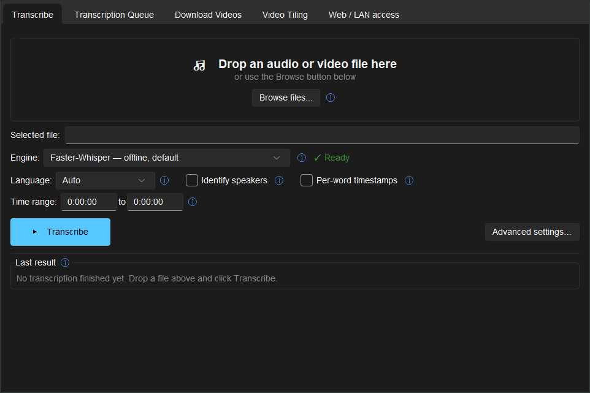
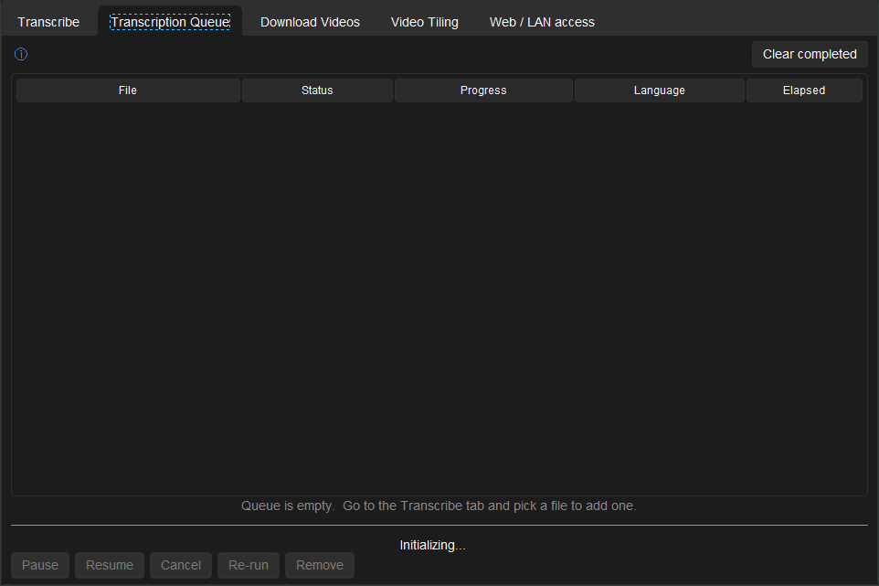
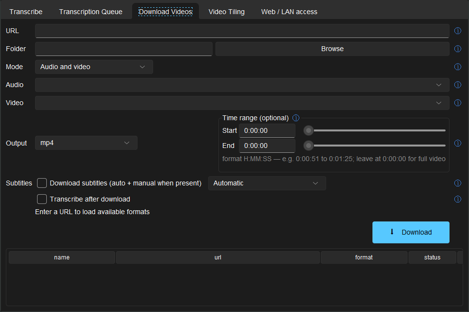
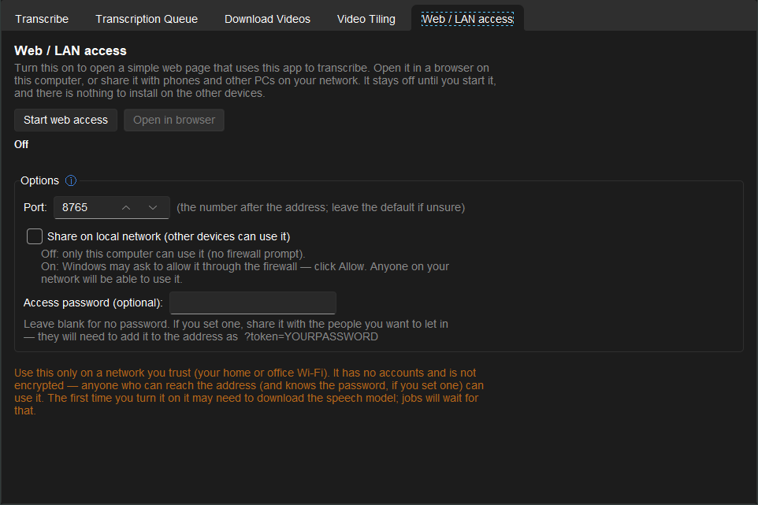
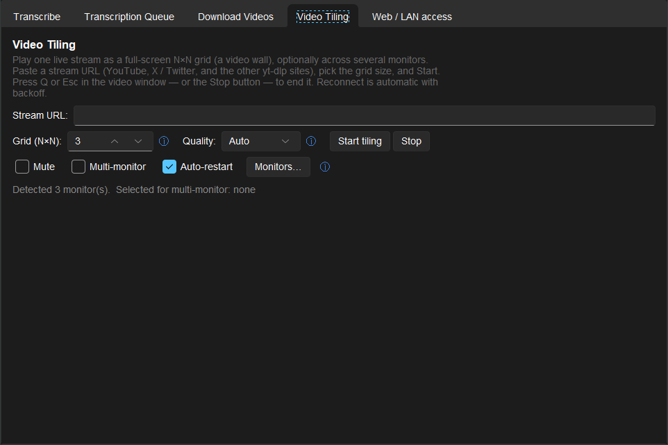

faster-whisper · whisper.cpp · Parakeet
Local, private transcription
Whisper large-v3 by default, plus large-v3-turbo and distil-large-v3.5. Pick the backend that fits your hardware.
Free & open source BSD-3-Clause
Whisper Transcriber Suite runs OpenAI's Whisper model entirely on your own computer — via faster-whisper, whisper.cpp or NVIDIA Parakeet. Drag in audio or video and get a timed transcript back. No cloud, no account, no per-minute cost.
Windows macOS Linux
faster-whisper · whisper.cpp · Parakeet
Whisper large-v3 by default, plus large-v3-turbo and distil-large-v3.5. Pick the backend that fits your hardware.
14 formats
Written right next to your input file — plus oTranscribe, ELAN, InqScribe and Express Scribe for professional transcript workflows.
Mic · system audio
Transcribes a microphone — or whatever this machine is playing — as it happens. Cuts are made at natural pauses so words are never split.
Per-word timestamps
Optional "Identify speakers" pass, plus per-word timestamps and time-range clipping for editing precise segments.
Pause · resume · re-run
Live status for every pending and running job, with full control over each row always one click away.
yt-dlp powered
Anything yt-dlp handles, with optional transcribe-on-finish. Downloads resume rather than restart.
Measures before it filters
Measures each recording first and only cleans it when that helps — checks its own output and reverts if it removed speech.
Plus AI tools (summaries, action items, a bilingual SRT pass), an optional offline voice-cloning tab, a local-network mode and video tiling — full list in the README.
Drop a file, pick your options, press Transcribe. That's the whole workflow — four more tabs cover queueing, downloads, video tiling and LAN sharing.





A drop target, engine and language pickers, speaker-label and word-timestamp options.
Every default engine runs in processes on your own computer. Nothing is uploaded unless you switch on one of the two opt-in cloud backends yourself.
Audio or video from disk, or anything yt-dlp can fetch. The Tk interface runs in the main process and queues the job instantly.
Every job runs in its own long-lived worker subprocess that keeps Whisper in memory and streams progress back over newline-delimited JSON — so the window never freezes.
A per-worker token and a heartbeat keep the routing robust and let the app detect a stuck worker instead of hanging with it.
Everything needed is bundled — a private Python runtime, ffmpeg, ffprobe and yt-dlp. Only the speech model itself downloads later (about 1–3 GB, once); after that the app is fully offline.
Windows Recommended for you
Setup-Standard.exe~215 MB
Most people — normal installer, Start-menu shortcut, upgrades in place.
Get the installerWindows portable
Portable.zip~330 MB
Unzip and run. No install, no admin rights, happy on a USB stick.
Get the ZIPmacOS Recommended for you
macOS-*.dmg~400 MB
A disk image for macOS — pick the build on the release page that matches your Mac.
Get the DMGLinux & source Recommended for you
Python 3.11+
git clone https://github.com/Milomilo777/whisper-transcriber-suite.git
cd whisper-transcriber-suite
pip install -r requirements.txt
python gui.pyEvery release, with notes, lives on GitHub Releases. Install guide.
Something else on your mind? Ask in GitHub Discussions.
Yes. It's BSD-3-Clause licensed, with no subscription, no per-minute cost and no telemetry by default. The Whisper model itself downloads once (about 1-3 GB) on first launch; after that the app runs fully offline.
No, not by default. Every default backend — faster-whisper, whisper.cpp, NVIDIA Parakeet — runs locally on your machine. Two backends are opt-in only (a cloud Gemini-API backend, and Google Cloud Speech-to-Text), and both stay off until you enable them yourself in Advanced → Backend.
Windows, macOS and Linux. Published downloads are a Windows installer, a Windows portable ZIP, and a macOS DMG; Linux runs from source.
srt vtt ass tsv txt json lrc md docx pdf, plus oTranscribe, ELAN, InqScribe and Express Scribe.
Yes — optional speaker diarisation ("Identify speakers"), with per-word timestamps and time-range clipping.
Yes, from the Live tab — a microphone or the system audio, transcribed as it happens.
Yes, any site yt-dlp supports, with an optional transcribe-on-finish step.
Yes, via the optional AI Tools tab in the transcript viewer — summarize, action items, ask-a-question, and a per-segment translate pass that writes a bilingual .srt. It's off by default.
Yes, via the optional Clone Your Voice tab, using OmniVoice (Apache-2.0) entirely on your machine. Off by default; opt in at install time, and you must confirm you have permission to clone the reference voice.
It runs the model locally via faster-whisper by default, so there's no per-minute API cost and no audio leaves your machine — unless you explicitly opt into one of the two cloud backends.
Yes — Web/LAN access mode turns this machine into a transcription page the other devices on the network can use.
Whisper Transcriber Suite is free and BSD-3-Clause licensed, maintained in the open. If it saved you time, a star on GitHub helps others find it — and a coffee is always appreciated.